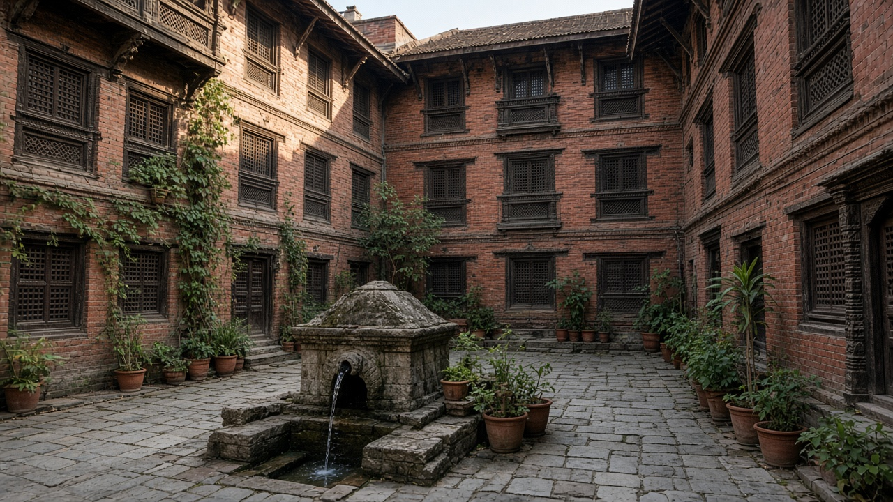
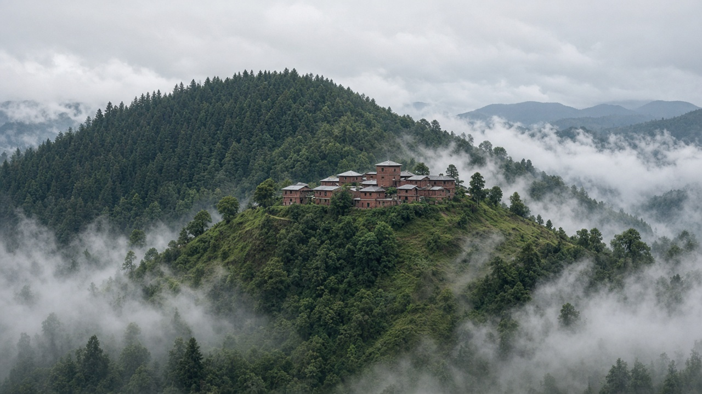
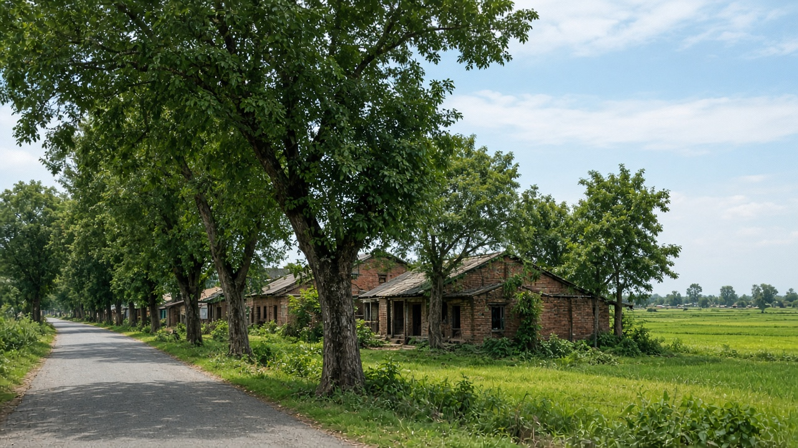

Sustainable Urban Development in Nepal
Published on August 20, 2026

Nepal’s urban future is being decided in the Kathmandu Valley, in lake and hill towns such as Pokhara, and in fast-growing Terai and inner-hill municipalities that barely had urban offices a generation ago. Valley sprawl has converted paddy terraces and river corridors into plot housing and highway strips, stretching water, roads, and commuting while fragmenting farmland that once cooled and fed the city. Earthquake risk sits under every new floor: the 2015 shocks exposed weak concrete, overloaded masonry, and narrow lanes that blocked rescue, yet reconstruction has often added height without matching seismic detail. Heritage towns—Patan, Bhaktapur, Kirtipur, Bandipur, and valley monument zones—show how compact courtyards and craft streets can still work if they are not emptied for hotels and parking. Sustainable urban development here means compact form, safer buildings, and living historic cores, not another ring of unserviced plots.
Federalism assigned planning, building permits, and local services to municipalities, but many lack planners, inspectors, and a reliable property-tax base. Metropolitan problems—valley traffic, rivers, and housing markets—cross dozens of local boundaries and need joint authorities, not only ward-level projects. Emerging hill bazaars climb steep slopes without drainage or setbacks, while Terai towns spread across floodplains and former fields with little shade or public space. Pokhara’s growth along the lake and highways repeats valley mistakes unless growth boundaries and lakeshore rules arrive first. Informal rental rooms absorb migrants from rural districts; upgrading and affordable units near jobs would keep that population from being pushed to hazardous edges. Municipal finance, open land records, and enforced codes are the unglamorous tools that make every other urban policy real.
A Nepal-specific path would protect remaining valley farmland and recharge zones, retrofit schools and hospitals first, and keep heritage neighbourhoods inhabited through housing support and seismic grants. Hill towns can cluster civic buildings and retain forested ridges; Terai municipalities can plant street trees, hold floodways, and avoid ribbon commercial strips. Inter-municipal transport—valley buses, Pokhara corridors, and Terai town links—should steer density rather than chase sprawl. Success would show as shorter daily trips, fewer preventable quake and flood deaths, living Newar and hill cores, and new municipalities that urbanise with pipes and parks in place. Nepal can still choose compact, inclusive, climate-aware towns; delay only concretes yesterday’s accidents into tomorrow’s city.

नेपालको सहरी भविष्य काठमाडौं उपत्यका, पोखराजस्ता ताल र पहाडी सहर, र एक पुस्ताअघि सहरी कार्यालय मुस्किलले भएका छिटो बढ्दो तराई तथा भित्री पहाडी नगरमा तय हुँदै छ। उपत्यका फैलावटले धान गह्रा र नदी करिडोरलाई प्लट आवास र राजमार्ग पट्टी बनाएको छ, पानी, सडक र आवतजावत तन्काउँदै शहर चिस्याउने र खुवाउने खेत टुक्र्याएको छ। भूकम्प जोखिम प्रत्येक नयाँ तलामुनि छ: २०१५ का झट्काले कमजोर कंक्रिट, अतिभारित इँटा र उद्धार छेक्ने साँघुरो गल्ली देखाए, तैपनि पुनर्निर्माणले प्रायः भूकम्पीय विवरण नमिलेर उचाइ थपेको छ। सम्पदा सहर—पाटन, भक्तपुर, कीर्तिपुर, बन्दीपुर र उपत्यका स्मारक क्षेत्र—ले सघन आँगन र शिल्प गल्ली अझै काम गर्न सक्ने देखाउँछन् यदि होटल र पार्किङका लागि रित्त्याइँदैनन्। यहाँ दिगो सहरी विकास भनेको सघन रूप, सुरक्षित भवन र जीवित ऐतिहासिक केन्द्र हो, अर्को सेवाविहीन प्लटको घेरा होइन।
संघीयताले योजना, भवन अनुमति र स्थानीय सेवा नगरपालिकालाई दियो, तर धेरैसँग योजनाकार, निरीक्षक र भरपर्दो सम्पत्ति कर आधार छैन। महानगरीय समस्या—उपत्यका ट्राफिक, नदी र आवास बजार—दर्जनौं स्थानीय सीमा काट्छन् र वडा आयोजना मात्र होइन संयुक्त निकाय चाहिन्छ। उदाउँदो पहाडी बजार नाला वा दूरी बिना अग्ला भिर चढ्छन् भने तराई सहर बाढी मैदान र पुराना खेतमा कम छाया वा सार्वजनिक ठाउँसहित फैलन्छन्। पोखराको ताल र राजमार्ग वृद्धि उपत्यका गल्ती दोहोर्याउँछ जबसम्म वृद्धि सीमा र तालकिनार नियम पहिले आउँदैनन्। अनौपचारिक भाडा कोठाले ग्रामीण जिल्लाका बसाइँ सर्ने समेट्छन्; स्तरोन्नति र रोजगारी नजिक किफायती एकाइले त्यो जनसंख्यालाई खतरनाक किनारामा धकेलिनबाट जोगाउँछ। नगर वित्त, खुला जग्गा अभिलेख र लागू संहिता ती बिना चम्कने औजार हुन् जसले अरू सहरी नीति साँचो बनाउँछन्।
नेपाल-विशिष्ट बाटोले बाँकी उपत्यका खेत र भूमिगत जल भर्ने क्षेत्र जोगाउने, विद्यालय र अस्पताल पहिले सुदृढ गर्ने र आवास सहयोग तथा भूकम्पीय अनुदानबाट सम्पदा छिमेक बसोबास गराइराख्ने हुनेथियो। पहाडी सहरले नागरिक भवन थुपार्न र वन डाँडा राख्न सक्छन्; तराई नगरले सडक रूख रोप्न, बाढी बाटो छोड्न र व्यापारिक लामो पट्टीबाट बच्न सक्छन्। अन्तरनगर यातायात—उपत्यका बस, पोखरा करिडोर र तराई सहर कडी—ले फैलावट पिछा गर्नुभन्दा घनत्व निर्देशित गर्नुपर्छ। सफलता छोटा दैनिक यात्रा, रोक्न सकिने भूकम्प र बाढी मृत्यु कमी, जीवित नेवार र पहाडी केन्द्र, र पाइप तथा पार्क सहित सहरीकरण गर्ने नयाँ नगरमा देखिनेछ। नेपालले अझै सघन, समावेशी, जलवायु-चेत सहर छान्न सक्छ; ढिलाइले हिजोका दुर्घटनालाई भोलिको शहरमा कंक्रिट मात्र पार्छ।

नेपाल का शहरी भविष्य काठमांडू घाटी, पोखरा जैसे ताल और पहाड़ी नगर, और एक पीढ़ी पहले शहरी कार्यालय मुश्किल से रखने वाले तेज़ बढ़ते तराई तथा भीतरी पहाड़ी नगरपालिकाओं में तय हो रहा है। घाटी फैलाव ने धान क्यारों और नदी गलियारों को प्लॉट आवास और राजमार्ग पट्टी बना दिया है, पानी, सड़क और आवागमन खींचते हुए वह खेत टुकड़े किए हैं जो कभी शहर ठंडा और खिलाते थे। भूकंप जोखिम हर नई मंज़िल के नीचे है: २०१५ के झटकों ने कमज़ोर कंक्रीट, अतिभारित चिनाई और उद्धार रोकने वाली संकरी गलियाँ दिखाईं, फिर भी पुनर्निर्माण ने प्रायः भूकंपीय विवरण बिना ऊँचाई जोड़ी है। सम्पदा नगर—पाटन, भक्तपुर, कीर्तिपुर, बंदीपुर और घाटी स्मारक क्षेत्र—दिखाते हैं कि सघन आँगन और शिल्प गलियाँ अभी काम कर सकती हैं यदि होटल और पार्किंग के लिए खाली न की जाएँ। यहाँ टिकाऊ शहरी विकास का अर्थ सघन रूप, सुरक्षित इमारतें और जीवित ऐतिहासिक केंद्र है, सेवाहीन प्लॉटों का एक और घेरा नहीं।
संघीयता ने योजना, भवन अनुमति और स्थानीय सेवाएँ नगरपालिकाओं को दीं, पर कई के पास योजनाकार, निरीक्षक और भरोसेमंद संपत्ति कर आधार नहीं। महानगरीय समस्याएँ—घाटी ट्रैफ़िक, नदियाँ और आवास बाज़ार—दर्जनों स्थानीय सीमाएँ काटती हैं और केवल वार्ड परियोजनाएँ नहीं संयुक्त प्राधिकरण चाहती हैं। उभरते पहाड़ी बाज़ार नाली या दूरी बिना ऊँची ढलान चढ़ते हैं जबकि तराई नगर बाढ़ मैदान और पुराने खेतों पर कम छाया या सार्वजनिक जगह के साथ फैलते हैं। पोखरा की ताल और राजमार्ग वृद्धि घाटी गलतियाँ दोहराती है जब तक वृद्धि सीमा और ताल किनारा नियम पहले न आएँ। अनौपचारिक किराया कमरे ग्रामीण जिलों के प्रवासियों को समेटते हैं; स्तरोन्नति और रोजगार के पास किफ़ायती इकाइयाँ उस आबादी को ख़तरनाक किनारे धकेलने से बचाएँगी। नगर वित्त, खुले भूमि अभिलेख और लागू संहिता वे बिना चमक वाले औज़ार हैं जो बाकी शहरी नीति को सच बनाते हैं।
नेपाल-विशिष्ट रास्ता बचे घाटी खेत और भूजल भरने वाले क्षेत्र बचाएगा, विद्यालय और अस्पताल पहले सुदृढ़ करेगा और आवास सहयोग तथा भूकंपीय अनुदान से सम्पदा मोहल्ले बसे रखेगा। पहाड़ी नगर नागरिक इमारतें थुपेर वन धार रख सकते हैं; तराई नगरपालिकाएँ सड़क वृक्ष लगा सकती हैं, बाढ़ पथ छोड़ सकती हैं और व्यापारिक लंबी पट्टी से बच सकती हैं। अंतरनगर परिवहन—घाटी बसें, पोखरा गलियारे और तराई नगर कड़ियाँ—फैलाव पीछा करने के बजाय घनत्व निर्देशित करें। सफलता छोटी दैनिक यात्रा, रोकी जा सकने वाली भूकंप और बाढ़ मृत्यु कमी, जीवित नेवार और पहाड़ी केंद्र, और पाइप तथा पार्क सहित शहरीकरण करने वाली नई नगरपालिकाओं में दिखेगी। नेपाल अभी सघन, समावेशी, जलवायु-सचेत नगर चुन सकता है; देरी कल की दुर्घटनाओं को कल के शहर में केवल कंक्रीट कर देती है।